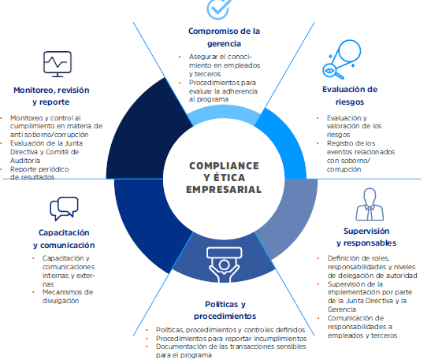

Los resultados financieros no muestran una alta volatilidad dado que los registros contables son en dólares americanos. Así mismo, ISA REP mantiene instrumentos derivados de cobertura (Cross Currency Swap), que reducen la exposición al riesgo de las fluctuaciones de tipo de cambio sobre la emisión de deuda en soles. Cabe mencionar que, en aplicación de las Normas Internacionales de Información Financiera, CINIIF 12, la empresa reconoce como gastos en el estado de ganancias y pérdidas, los costos de construcción de las líneas de transmisión, ya que, de acuerdo con dicha interpretación, la empresa presta un servicio de construcción en favor del Estado Peruano.
Contraloría y Auditoría Interna apoyan a ISA REP en su responsabilidad de fortalecer el sistema de control interno mediante la identificación de oportunidades de mejora. Verifican también la razonabilidad de los resultados de los indicadores de gestión en la empresa y apoyan a las gerencias en el cumplimiento de los objetivos estratégicos mediante la evaluación de la gestión de riesgos, control y gobierno.
El Comité de Auditoría asiste al Directorio en la vigilancia sobre el sistema de control interno de ISA REP. Este comité sesiona por lo menos cuatro veces al año y está conformado por tres miembros:
El Gerente General, el Contralor y el jefe de Auditoría Interna asisten al Comité con voz y sin voto. Este último participa como secretario técnico del Comité. El auditor externo asiste como invitado cuando es requerido por el Comité de Auditoría.
El Comité de Auditoría asiste al Directorio en la vigilancia sobre el sistema de control interno de ISA REP. Este comité sesiona por lo menos cuatro veces al año y está conformado por tres miembros:
Este Comité tiene, dentro de sus funciones principales, garantizar la investigación de las denuncias recibidas a través de la Línea Ética y determinar las acciones correctivas, preventivas y disciplinarias cuando sea necesario.
Para lograr los objetivos enumerados, el Código de Ética y Conducta establece y desarrolla pautas de comportamiento y reglas de actuación en línea con la realidad de la empresa, el mercado donde trabaja y sus relaciones con diversos grupos de interés.
Los resultados financieros no muestran una alta volatilidad dado que los registros contables son en dólares americanos. Así mismo, ISA REP mantiene instrumentos derivados de cobertura (Cross Currency Swap).
| Fecha | Titulo | Formato |
|---|---|---|
| Mar, 2019 | Presentación Corporativa 2019 | |
| Mar, 2019 | Presentación Corporativa 2019 | |
| Mar, 2019 | Presentación Corporativa 2019 | |
| Mar, 2019 | Presentación Corporativa 2019 |
Se han implementado mecanismos de asesoramiento y de denuncias. La Línea Ética que tiene por objetivo prevenir, detectar, investigar y remediar cualquier evento de fraude o corrupción, acto ilegal o cualquier conducta indebida que represente un perjuicio para ISA REP. Todas las denuncias que se reciben por estos canales son analizadas de acuerdo con el procedimiento de gestión de asuntos éticos y con los principios y valores del Código de Ética y Conducta, lo cual garantiza a los denunciantes que:
Su denuncia será analizada objetivamente por un equipo independiente.
Su identidad será confidencial garantizando el anonimato.
No se admitirán represalias.
Obtendrá una respuesta sobre la gestión de su denuncia.
En 2018 se recibieron dos denuncias mediante la Línea Ética. Tras su registro y análisis, ambas denuncias fueron desestimadas y no requirieron mayor acción. Ante casos corroborados, ISA REP tomará las acciones disciplinarias que correspondan, de acuerdo con lo establecido en el Reglamento Interno de Trabajo, en la legislación aplicable y en la directiva interna de asuntos disciplinarios.
La jefatura de Auditoría Interna realizó dos capacitaciones presenciales dirigidas a los nuevos trabajadores sobre el Código de Ética y Conducta y sobre el uso de la Línea Ética. En el caso de los nuevos trabajadores, ellos recibieron una copia física del Código de Ética y Conducta como parte del kit del ingresante.
ISA REP tiene por objeto social la construcción, operación y mantenimiento de redes de transmisión de energía y el desarrollo de sistemas, actividades y servicios de telecomunicaciones.
Te avisaremos sobre nuevas noticias, reportes o actualizaciones directo a tu correo electrónico
Avenida Juan de Arona Nro. 720 Oficina 601 San Isidro. Tel: (511) 7126600
Ver nuestro directorio de contacto completo